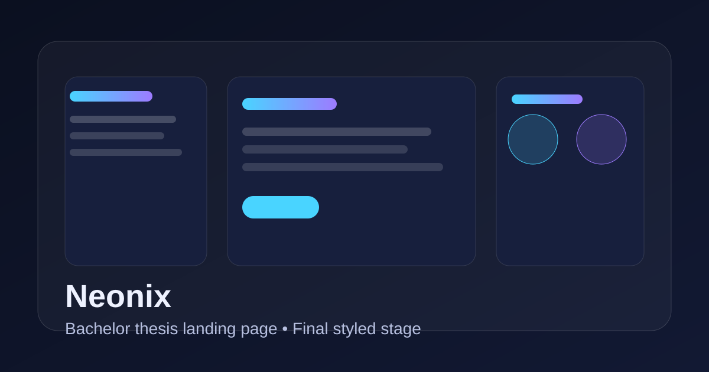

Що реалізовано на цьому етапі
Сторінка отримала зрозумілу заголовкову структуру, семантичні секції, альтернативні тексти для зображень, фокус-стани для клавіатурної навігації та додаткові SEO-метадані.
Бакалаврська робота
На другому етапі додано семантичну розмітку, accessibility-покращення, розширені SEO-метадані, Open Graph, Twitter Card та Schema.org розмітку.

Сторінка отримала зрозумілу заголовкову структуру, семантичні секції, альтернативні тексти для зображень, фокус-стани для клавіатурної навігації та додаткові SEO-метадані.
Використано теги header, nav, main, section, article, aside і footer.
Додано skip-link та видимі focus-стани для елементів керування.
Усі інформативні зображення мають альтернативний текст, а декоративні — позначені як приховані.